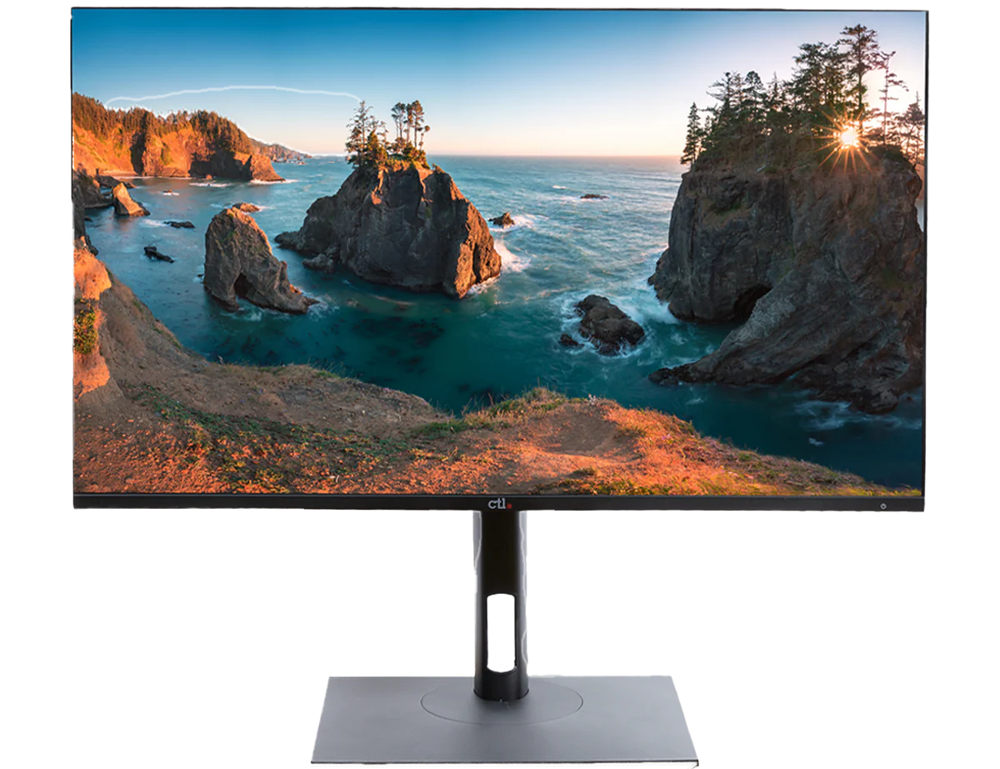

The Web One
October 7, 2024 by Gabe Riley
Websites have become essential tools for communication, information sharing, and commerce in todays digital age. From personal blogs to vast e-commerce platforms, the diversity of websites reflects the myriad interests and needs of users around the globe.
Each website serves a unique purpose, whether its providing news, showcasing portfolios, or facilitating social interactions. With the rapid evolution of technology, web design and development have transformed.